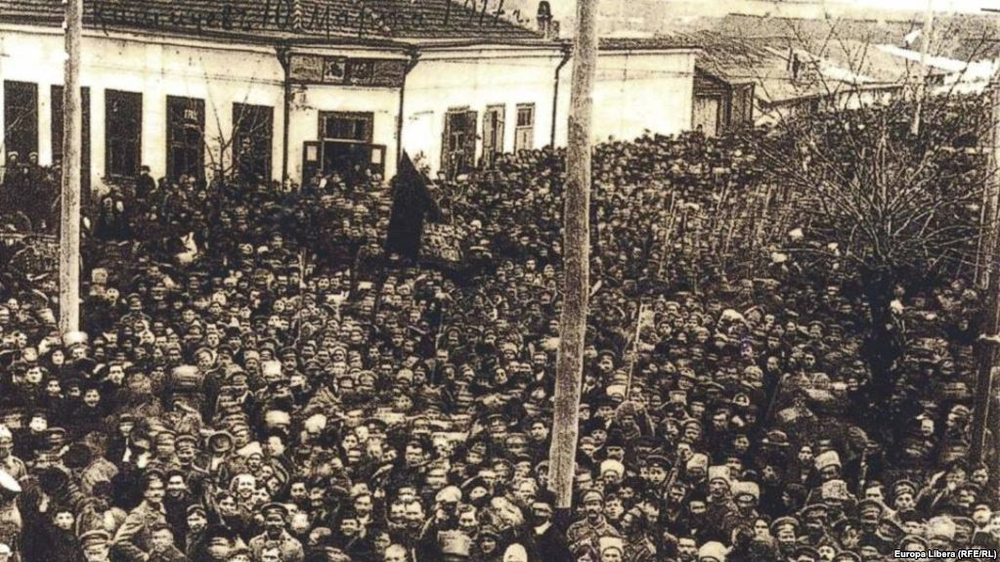
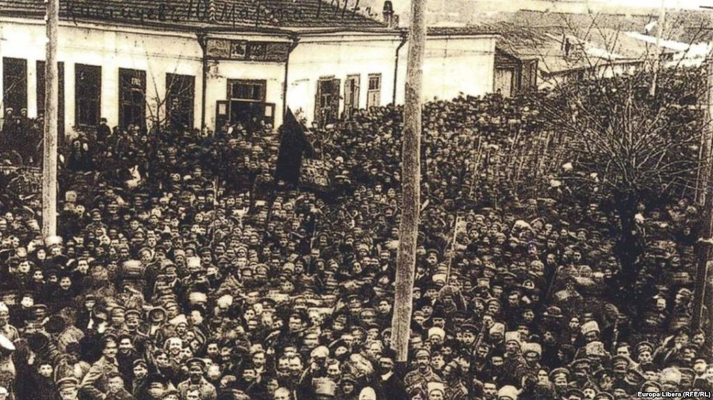

Totul începe în 1913, la Viena, când moștenitorul tronului Austro-Ungariei, arhiducele Franz Ferdinand, se angajează să meargă anul următor, împreună cu soția sa, să inspecteze trupele garnizoanei din Bosnia-Herțegovina. Sofiei i s-a permis, în ciuda etichetei imperiale specifice unei căsătorii morganatice, să apară alături de soțul ei, ceea ce a și făcut pe 28 iunie. Data aducea amintiri neplăcute arhiducelui, pentru că la 28 iunie 1900, cu doar câteva zile înaintea căsătoriei sale, se angajase să renunțe la tron în numele fiilor ce urmau să se nască din acea căsătorie morganatică. Aceeași zi reprezenta pentru sârbii din Bosnia-Herțegovina, deveniți supuși ai imperiului în 1908, un alt simbol, cel al înfrângerii în fața Otomanilor în bătălia de la Kossovopolje și al luptei pentru independență. Aflând că arhiducele va veni la Sarajevo pe 28 iunie, câțiva sârbi decid să-l asasineze. Dar cum să o facă? În ziua de duminică, 28 iunie, Franz Ferdinand și Sofia, sosiți de la Viena cu trei zile înainte, au participat la slujba religioasă ținută la capela hotelului unde erau cazați. După terminarea slujbei, cei doi s-au alăturat cortegiului. Complotișitii stabiliseră să se împartă în trei grupuri de-a lungul arterei principale a orașului. Planul lor era simplu:când mașina arhiducelui ajungea în dreptul lor, să arunce bombele. Planul avea însă trei lacune. În primul rând, una ce ținea de conceperea lui:cu protecția oficială oferită arhiducelui, putea fi destul de greu să reușească să arunce o bomă, apoi – în cazul eșecului unei prime încercări, mașina sigur nu ar fi urmat ruta prestabilită pe care se aflau restul complotiștilor. Apoi, bombele obținute de la Belgrad erau prea mari ca să poată fi ascunse în buzunar, iar mecanismul era foarte complicat, trebuind ca, odată aprinsă bomba, să aștepți 10 secunde înainte de a o arunca, pentru că timpul de explozie era de 12 secunde. Pentru un atentat comis din mijlocul mulțimii și în apropierea forțelor de ordine, planul necesita foarte mult sânge rece. O a treia lacună consta în faptul că toți cei trei complotiști erau tineri:Vaso Cubrilovic avea 17 ani, iar Nedeljko Cabrinovic și Gavrilo Princpip 19. Deși foarte hotărâți, ei nu aveau experiență, iar la momentul acțiunii fiecare trebuia să aibă tăria de caracter necesară pentru a face pasul ce separă intenția de a ucide de actul propriu zis. Părăsind patiseria Vlanic, unde se întâlniseră în jurul orei, cu bombele ascunse sub haine, iar în buzunare cu un pistol şi o pastilă de cianură, cei trei tineri s-au despărţit şi fiecare şi-a ocupat poziţia prestabilită de-a lungul străzii, intrând în vorbă cu ceilalţi oameni pentru a nu atrage atenţia asupra lor. Ei ştiau de la Danilo Ilic, care citise acest lucru în ziare, că Franz Ferdinand merge de obicei în a doua maşină a cortegiului. Problema era că acest cortegiu era deschis întotdeauna de o maşină de poliţie, iar complotiştii nu ştiau dacă arhiducele se afla în a doua sau a treia maşină. Complotiştii îşi ocupă poziţiile şi aşteaptă sosirea cortegiului. Când acesta trece prin faţa primului dintre atentatori, Muhamed Mehemedbasic, nu se întâmplă nimic. Puţin mai în faţă, Cabrinovici şi-a luat precauţia de a scoate din timp siguranţa bombei, apoi întreabă un jandarm din apropiere în care dintre maşini se află arhiducele, acesta spunându-i că în cea de-a treia. Când aceasta ajunge în dreptul său, Cabrinovici aprinde bomba, dar o aruncă înainte de a aştepta cele 10 secunde. Şoferul maşinii, surprins de zgomotul pe care-l aseamănă unei arme de foc, apasă instinctiv pe acceleraţie. Astfel, bomba a aterizat fix în spatele arhiducelui, pe capota lăsată a mașinii decapotabile. În cele din urmă, alunecă pe stradă şi explodează mai aproape de maşina din spate. Mărimea urmelor lăsate de exploxie-o gaură de circa 15 cm adâncime şi 30 de cm în diametru – ne oferă idee asupra a ceea ce s-ar fi întâmplat dacă bomba ar fi explodat la picioarele cuplului imperial. Imediat după explozie, Franz Ferdinand ordonă şoferului să oprească pentru a vedea dacă cineva din cortegiu a fost rănit sau omorât. Doar câţiva trecători, colonelul Erich von Merizzi şi contele Alexandre Boss-Waldeck au suferit răni uşoare. Cortegiul îşi reia ruta şi trece pe lângă ceilalţi complotişti, care nu reacționează în niciun fel, ajungând la destinaţia finală, anume la hotel. Între timp, poliţia porneşte în căutarea lui Cabrinovic şi a posibililor săi complici. Cabrinovic a înghiţit doza de cianură pe care o avea la el, dar – în mod straniu – aceasta nu are efectul scontat, provocându-i doar o stare de greaţă. Neîndrâznind să se împuşte, el este într-un final capturat de jandarmi. Neştiind că încercarea sa de asasinat eșuase, atunci când este întreabat dacă este sârb, el răspunde că este „un erou sârb!”. La hotel, Franz Ferdinand este furios și îi spune primarului următoarele cuvinte:„Eu vin la Sarajevo ca prieten şi sunt primit de o bombă!”. Soţia sa, Sophia, încearcă să-l calmeze. În timpul recepţiei ce a urmat, arhiducele îl întreabă, cu umor şi cinism, pe generalul Potiorek, guvernatorul provinciei şi responsabilul cu securitatea cuplului imperial, dacă trebuie să se mai aştepte la încă o bombă. Potiorek îl asigură că nu e cazul, dar insistă totuşi că ar trebui schimbat programul vizitei. În loc să meargă, conform planului, la muzeu, el sugerează arhiducelui să plece direct la Konak, unde trebuia să ia prânzul, sau să rămână la hotel până la sosirea armatei. Franz Ferdinand decide însă că vrea să meargă la spital pentru a vedea cum se simte colonelul Merizzi. Statul său major decide atunci schimbarea rutei:maşina trebuia, în mod normal, să părăsească strada principală şi să facă dreapta la Podul Latin, apoi să o ia pe strada Franz Joseph spre direcţia centrului. În schimb, s-a decis rămânerea pe strada principală, care era destul de largă, cât mai mult timp posibil înainte de a se îndrepta spre spital. Franz Ferdinand, deşi nu o arăta, era destul de neliniştit, nu pentru el, ci pentru Sophia. De aceea, a vrut să o convingă pe soţia sa să nu vină cu el la spital, dar ea a refuzat. Într-un final, cuplul părăseşte hotelul, cu o singură maşină, a şefului poliţiei, mergând în faţa lor. Sophia s-a aşezat în maşină în dreapta soţului ei. Ajungând în dreptul podului Latin, maşina din faţă, în loc să rămână pe strada principală aşa cum fusese stabilit, o ia la dreapta. Șoferul ori nu fusese informat de schimbarea rutei, ori a luat-o pe acel drum din reflex... În orice caz, cele două maşini au luat-o în cele din urmă pe strada Franz Joseph către muzeu. Generalul Potiorek, aflat în dreapta şoferului maşinii imperiale, începe să urle, ordonând șoferilor celor două mașini să întoarcă. Mașina în care se afla cuplul imperial încearcă o întoarcere destul de dificilă, dată fiind strada îngustă pe care se afla. Toată scena se derula în fața unei mulțimi încântate să-l vadă pe arhiduce de la o distanță așa de mică. Printr-o coincidenţă tragică am putea spune, Gavrilo Princip era acolo, în apropiere, supărat şi furios probabil din cauza eşecului planului. Nu mai are starea de spirit necesară pentru a se gândi la un nou plan şi, de fapt, nici intenţia de a mai ucide. Şi dintr-o dată, în faţa ochilor îi apare, la mai puţin de doi metri depărtare, cuplul imperial. Avea încă bomba şi revolverul asupra lui. A ezitat un moment deoarece persoana cea mai aproape de el nu era arhiducele, ci Sophia. Princip a reacționat mai mult din instinct:a scos pistolul și a tras. Avea să mărturisească la proces că a întors capul în momentul tragerii și că nu mai știe de câte ori a tras sau asupra cui. Gavrilo trăsese de două ori:primul glonț l-a atins pe Franz Ferdinand, atingându-i vena jugulară, iar al doilea a lovit-o pe Sophia în abdomen. Spectatorii din jur s-au aruncat asupra sa, unul dintre ei trăgându-l de braț. N-a mai reușit să-și folosească arma, dar a reușit să înghită cianura care, ca și în cazul lui Cabrinovic, n-a avut un efect letal. În minutele imediat următoare, mașina imperială s-a îndreptat rapid spre reședința guvernatorului. Nimeni nu și-a dat seama de gravitatea rănilor suferite de cei doi. Franz Ferdinand, conștient încă, se gândea înainte de toate la soția sa. Potiorek a mărturisit ulterior că l-a auzit șoptindu-i ”Nu-i nimic, nu-i nimic”.Sophia și-a pierdut cunoștiința și s-a prăbușit pe genunchii soțului ei care începuse să sângereze din ce în ce mai rău. Princip trăsese la ora 10.30. La 10.45 a murit Sophia, iar 15 minute mai târziu și Franz Ferdinand. O lună mai târziu, Austro-Ungaria declara război Serbiei.
Cum se întâmplă adesea în istorie, vremea a jucat un rol important în evenimentele din februarie 1917. După o iarnă teribilă, a urmat o încălzire neobișnuită pentru Sankt Petersburg (rebotezat în anii războiului în Petrograd, pentru că vechea denumire avea o rezonanță mult prea germanică), cu temperaturi de +8 grade. În documentarele de epocă pe pot vedea mulțimile de protestatari adunate sub un cer strălucitor. Scânteia care a provocat lanțul de evenimente ce într-un final va duce la abdicarea țarului și la instaurarea unei republici parlamentare l-a reprezentat marșul femeilor prilejuit de aniversarea pe 23 februarie 1917 a Zilei Internaționale a Femeii. Rigorile economiei de război aveau repercusiuni crunte asupra populației civile, ce suferea în urma unei penurii cronice de alimente. La scurt timp, marșul s-a transformat într-un protest spontan, axat pe revendicarea pâinii cea de toate zilele. Femeilor li s-au alăturat muncitorii de la uriașele ateliere mecanice Putilov. Un martor al evenimentelor din zilele respective, britanicul Herbert Stewart, tutorele nepoților țarului Rusiei, își nota în jurnal caracterul spontan și anarhic al manifestațiilor de revoltă îndreptate împotriva autorităților. „Revolta și dezordinea domneau pe străzi, și cred că asta e cea mai bună descriere a unei revoluții: poporul spărgea magazine, prăda brutăriile; femeile, mai ales. Răsturnau tramvaiele, construiau baricade din lemn și pietre de pavaj”, consemna Herbert Stewart. Din cauza bolii fiului său (hemofilie) se va răzgândi, hotărând să cedeze coroana direct fratelui său Mihail. Decretul de abdicare semnat de Nicolae al II-le este transmis în aceeași zi Dumei de la Petrograd: „În zilele marii lupte împotriva inamicilor străini, care încearcă de aproape trei ani să ne înrobească patria, Domnul Dumneze s-a milostivit să trimită Rusiei o nouă și grea încercare. [...] În aceste zile hotărâtoare pentru viața Rusiei, Noi considerăm că ține de datoria Noastră să asigurăm poporului Nostru cea mai strânsă unitate cu putință și o consolidare a tuturor forțelor naționale. […] În înțelegere cu Duma Imperială, am hotărât să renunțăm la Tronul Imperial Rus și să depunem puterea supermă. Cum nu dorim să Ne despărțim de iubitul Nostru fiu, transmitem succesiunea fratelui Nostru, Marele Duce Mihail Aleksandrovici. [...] Îl povățuim pe fratele Nostru să conducă afacerile de stat în deplină și inviolabilă unitate cu reprezentanții poporului din corpurile legiuitoare, după acele principii care vor fi stabilite de ei. […] Îi îndemnăm pe fiii credincioși ai patriei să-și îndeplinească datoria sfântă, să se supună [noului] țar în greul moment de restriște națională și să-L ajute ca, împreună cu reprezentanții poporului, să conducă Imperiul Rus pe calea victoriei, prosperității și gloriei, Domnul Dumnezeu să ajute Rusia!”
Revoluția Germană, (cunoscută și ca Revoluția din Noiembrie), este denumirea generică a unei serii de evenimente care s-au petrecut în 1918-1919, culminând cu răsturnarea Kaiserului și instaurarea republicii democratice. La fel ca și în cazul Rusiei, revoluția nu a fost condusă de un partid politic, iar consiliile muncitorilor și soldaților, similare cu sovietele rusești, au pus mâna pe putere în toată țara. Evenimentele din acea perioadă continuă să polarizeze chiar și în zilele noastre Stânga, unul dintre motive fiind utilizarea de către guvernul social-democrat a unităților paramilitare Freikorps ale Dreptei împotriva rebeliunii spartachiste de extrema stângă. Ca și Revoluția Rusă, Revoluția Germană a apărut ca o consecință a situației dezastruoase a țării de la sfârșitul primului război mondial. Înfrângerea armatei de sub comanda supremă a lui Erich Ludendorff a declanșat o criză politică. Puterea a fost preluată de liberalul Max von Baden. Deși cel mai important partid al muncitorilor, Partidul Social-Democrat (PSDG), participa la guvernare, acest lucru nu a putut împiedica rebeliunea. Revolta a început în Kiel, pe 4 noiembrie 1918, când 40.000 de marinari și soldați din infanteria marină au preluat puterea în port în urma dezvăluirii unor planuri ale Statului Major al Marinei de executare a unui atac împotriva marinei britanice, în condițiile în care era evident că războiul era pierdut. Începând cu 8 noiembrie, Sfaturile (Sovietele) Muncitorilor și Soldaților au cucerit puterea în cea mai mare parte a Germaniei de vest, ceea ce a dus la formarea așa numitei Räterepublik (Republica Sfaturilor (Sovietelor) ). Kaiserul a fost forțat să abdice pe 9 noiembrie, astfel sfârșindu-se monarhia germană. Partidul Social Democrat a fost propulsat la conducerea noii republici alături de aliatul mult mai radical, Partidul Social Democrat Independent din Germania (PSDIG). Alianța celor două partide s-a dezintegrat până la sfârșitul lunii decembrie 1918, când PSDIG a părăsit guvernul în semn de protest față de ceea ce ei considerau a fi compromisurile cu status quoul capitalist. Mai mult, o a doua mișcare revoluționară condusă de comuniștii din Liga Spartachistă a izbucnit în ianuarie 1919. Pentru a îi contracara pe comuniști, liderul social-democrat Friedrich Ebert a însărcinat milițiile naționaliste Freikorps să înăbușe revoluția. Cele mai faimoase victime ale operațiunilor contrarevoluționare au fost liderii spartachiști Karl Liebknecht și Rosa Luxemburg, care au fost asasinați pe 15 ianuarie 1919. Până în mai 1919, stânga revoluționară fusese înfrântă. Revoluția Germană a dus la instaurarea Republicii de la Weimar, o democrație parlamentară care a fost zguduită de instabilitate și polarizare, și care a fost lovită de o serie de crize sociale, care au dus la dispariția ei în 1933, când național-socialiștii conduși de Adolf Hitler au cucerit puterea.